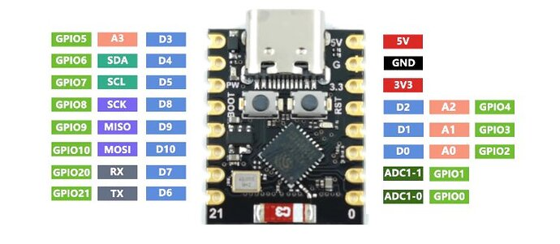
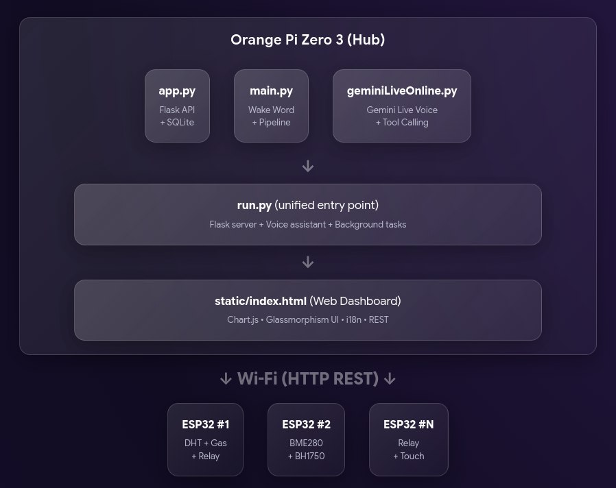

Orange Pi Zero 3 - одноплатний комп'ютер, який використовується як центральний обчислювальний вузол проєкту MarvinLink. Він обробляє аудіопотік з мікрофонів, запускає локальний рушій розпізнавання мовлення Vosk та керує периферією через ESP32. Компактні розміри та низьке енергоспоживання роблять його зручним для цілодобової роботи в домашніх умовах.

ESP32 — мікроконтролер, що відповідає за взаємодію з давачами та виконавчими пристроями. Підтримує Wi-Fi та Bluetooth, завдяки чому легко інтегрується в локальну мережу проєкту без додаткових модулів.
Загальна схема взаємодії компонентів проєкту MarvinLink
